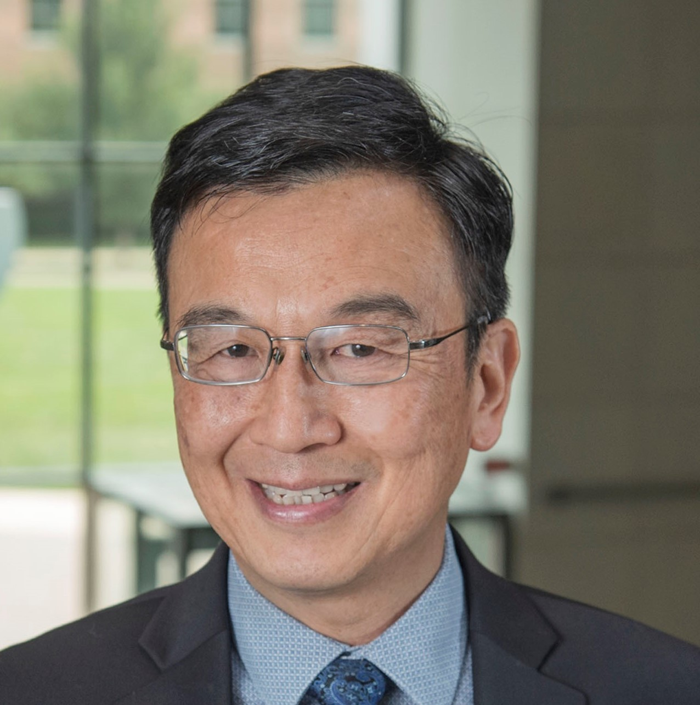
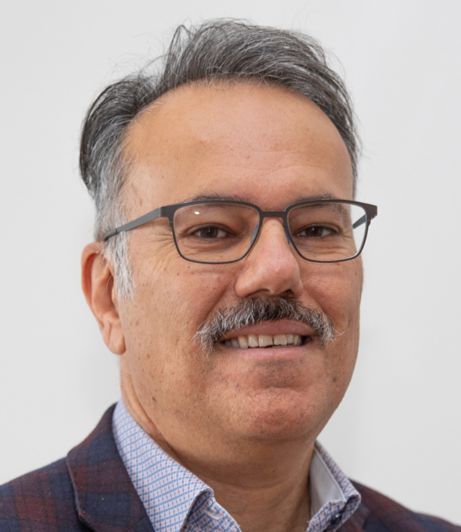
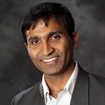

일시 및 장소
2025년 10월 19일 일요일 13:20~17:00
롯데호텔 서울 Garnet (37F)
주관
서울대학교 차세대데이터센터 연구센터
조직위원
김남승 교수(Univ. of Illinois, Urbana-Champaign), 김지홍 교수(서울대학교), 이재욱 교수(서울대학교), 안정호 교수(서울대학교)
초대의 말씀
컴퓨터 아키텍처를 중심으로 컴퓨터시스템 전반에 관심 있는 젊은 연구자들을 위해 해외 석학 세 분을 모시고 케아멘 2025를 개최합니다. 본 워크숍은 대학원생(석·박사)과 박사후연구원을 주 대상으로 합니다.
이번 워크숍은 초청 강연 3편과 패널 토론으로 구성됩니다. 초청 강연에서는 최신 연구 동향과 연구 철학을 소개하고, 이어지는 패널 토론에서는 성공적인 대학원 생활 팁과 졸업 이후 커리어 설계에 관한 석학들의 경험과 조언을 공유합니다.
케아멘 2025는 연구의 깊이를 더하고, 졸업 이후의 진로를 선명하게 그릴 수 있는 드문 기회입니다. 뜻있는 많은 분들의 관심과 참여를 바랍니다.
초청석학

Prof. Wen-mei Hwu
Emeritus Professor at UIUCSR. Distinguished Researcher Scientist at NVIDIA

Prof. Babak Falsafi
Professor at EPFL

Prof. Murali Annavaram
Professor at University of Southern California
프로그램 일정
| 시간 | 프로그램 | 발표자 |
|---|---|---|
| 13:20 ~ 13:30 | Welcome & Opening Remarks | Prof. Nam Sung Kim |
| 13:30 ~ 14:15 | Near-Compute Storage and GPU Software Stack for Predictive AI Applications | Prof. Wen-mei Hwu |
| 14:15 ~ 15:00 | What's Hot in Computer Architecture? Datacenters (literally) | Prof. Babak Falsafi |
| 15:00 ~ 15:20 | All Speakers | |
| 15:20 ~ 16:05 | Building a Superconducting CPU: One Microarchitecture Block At a Time | Prof. Murali Annavaram |
| 16:05 ~ 17:00 | Panel: How to be successful graduate students and then researchers /engineers in the computer architecture field? | Prof. Nam Sung Kim, All Speakers |
※ 상기 프로그램은 사정에 따라 변경될 수 있습니다.